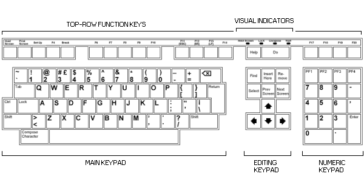
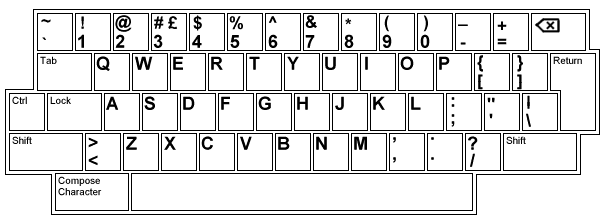
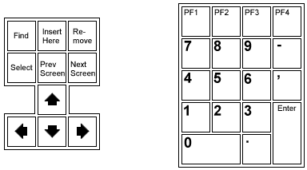
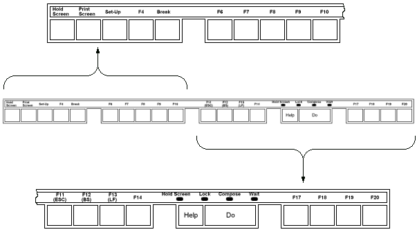

| Chapter 2 | Contents | Chapter 4 |
The keyboard (Figure 3-1) has four groups of keys, four indicator lights, and two audible indicators. There are 15 models of the keyboard available (Appendix D). This chapter shows the North American/United Kingdom keyboard. The keys are grouped by function.
|  |
|  |
This keypad (Figure 3-2) is similar to a standard typewriter keyboard. The main keypad has the following special function keys.
| Tab | The Tab key sends a horizontal tab, which normally moves the cursor to the next tab stop on the line. You can use the Tab Set-Up screen (Chapter 4) to select tab stops. |
| Ctrl | Holding down the Ctrl key and pressing another key sends a control code to the system. For example, Ctrl-Z means to hold down Ctrl and press the Z key. A control code tells the system to perform a special function. |
| Lock | If you use the "Caps Lock" setting in the Keyboard Set-Up screen (Chapter 4), pressing Lock makes the alphabetic keys send uppercase characters. If you use the "Shift Lock" setting, pressing Lock makes all the keys send the top character on the key. When you release Lock, all keys send their bottom character. |
| Shift | Holding down the Shift key and pressing another key sends the uppercase (or top) character on the key. In some cases, you use Shift with another key to perform a local function. For example, Shift-Print Screen means to hold down Shift and press the Print Screen key. |
| Return | The Return key sends either a carriage return or a carriage return and line feed (selected in the General Set-Up screen, Chapter 4). Pressing Return usually moves the cursor to the next line. Many applications use Return to indicate the end of a command. |
(Delete) |
The key sends either a delete (DEL) character or a backspace (BS) character (selected in the Keyboard Set-Up screen, Chapter 4). Many applications use to erase one character to the left of the cursor. Pressing Ctrl- sends a CAN (cancel) character. |
| Compose Character | This key lets you generate characters that do not appear as standard keys on your keyboard. See Chapter 5. |
|  |
The editing keypad (Figure 3-3) has six editing keys and four arrow keys. Pressing an arrow key normally moves the cursor in the direction of the arrow. For example, pressing the key moves the cursor down one line. The function of the editing keys depends on the software application you use. See your application manuals for details.
Numeric keypad keys (Figure 3-3) often have functions assigned by your application software -- especially PF1, PF2, PF3, and PF4. See your application manuals for details. Some applications let you use the numeric keypad to enter numeric data as you would with a calculator.
| Enter | The Enter key normally works like the Return key. That is, Enter sends a carriage return or a carriage return and line feed (selected in the General Set-Up screen, Chapter 4). You also use Enter to change set-up feature settings and select set-up action features. |
|  |
The first five top-row keys on the left (Figure 3-4) have predefined functions, described below. You cannot change these functions. Your application software can define the function of the remaining top-row keys. See your application manuals for details.
| Hold Screen | This key freezes data on the screen, so you can read it. When you press Hold Screen, the Hold Screen indicator turns on. Pressing Hold Screen again releases the screen, so new data can appear. The Hold Screen indicator turns off. |
| Print Screen | This key sends text from the screen to a printer connected to the terminal. Pressing Ctrl-Print Screen turns auto print mode on or off. See "Auto Print Mode" in Chapter 6. |
| Set-Up | This key lets you enter or leave set-up (Chapter 4). |
| F4 | This key is disabled. |
| Break | This key works alone or with other keys to perform functions that affect communication between your terminal and system. You can disable the Break function in the Keyboard Set-Up screen (Chapter 4).
|
| F11 (ESC) |
F11 is a function key often defined by application software. In VT100 and VT52 modes, F11 sends an escape (ESC) character. |
| F12 (BS) |
F12 is a function key often defined by application software. In VT100 and VT52 modes, F12 sends a backspace (BS) character. |
| F13 (LF) |
F13 is a function key often defined by application software. In VT100 and VT52 modes, F13 sends a line feed (LF) character. |
The keyboard has four indicator lights (Figure 3-4).
| Hold Screen | Turns on or off when you press the Hold Screen key. |
| Lock | Turns on or off when you press the Lock key. |
| Compose | Turns on when you are typing a compose sequence (Chapter 5). |
| Wait | Turns on when the keyboard is locked (cannot send data). You can clear a locked keyboard by selecting the Clear Comm feature from the Set-Up Directory screen (Chapter 4). |
The keyboard has two audible indicators, a keyclick and a bell. You can use a margin bell, warning bell, or both. You select the keyclick and bell setting from the Keyboard Set-Up screen (Chapter 4).
| Keyclick | All keys that send a code or perform a function make a clicking sound when pressed, except under the following exceptions.
|
| Bell | The margin bell sounds when the cursor is eight characters from the right margin. The warning bell tone sounds for any of the following conditions.
|